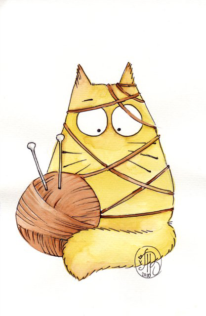

- Майже 2/3 доби кішки витрачають на сон. Так, кіт, який прожив 9 років, 6 із них проспав.
- Більшість кішок є правшами, а більшість котів – лівшами.
- У світі живуть понад 500 млн домашніх котів. Сама "котяча" країна – це Австралія. Там на 10 осіб припадає 9 котів.
- Давньоєврейська легенда свідчить: у ковчезі Ноя розплодилися миші та пацюки, які знищували їжу. Ной почав молитися Богу, щоб той приструнив гризунів. Бог у відповідь на молитви змусив лева чхнути – і з пчиху лева з'явився кіт.
- Звичайна домашня кішка здатна бігати зі швидкістю до 50 км/год, правда, тільки на короткі дистанції.
ВСЕ, ЩО ВИ БАЖАЛИ ЗНАТИ
але не наважувались запитати
Кішки живуть з нами не перше століття. Але не кожен із нас знає кішок досконально, особливо їх звички й особливості поведінки.Якщо ви давно мріяли про пухнастого улюбленця, але ще не наважились його завести, дізнайтесь про все про різновиди, характери та звички цих надзичайних тварин і ще раз подумайте, чи воно вам дійсно потрібно?
РІЗНОВИДИ
Королівський кітНадзвичайно пихатий звір. Горді, сильні, потужні, вони справжні лідери. Коли вони дивляться на вас, вони гіпнотизують, привертаючи увагу тільки до себе. Більшу частину дня він проводить лежачи на дивані або у своїй миски. Як правило, будучи дорослим, такий котик набирає вагу і стає схожим на великого плюшевого ведмедика. |
|
Кіт-мисливецьПолює на все, що рухається. На перший погляд ці коти спокійні і врівноважені. Але не надовго. Коли вони дивляться на вас смирно, без рухів, готуйтеся до тому, що вони просто вичікують вдалий момент, щоб напасти. |
|
 |
Кіт-романтикНі на кого не полює, здатен годинами розглядати своє відображення та мріяти про майбутнє. Може так замріятись, що забуде поїсти і помре з голоду, голодний, але щасливий. Тому бажано час від часу відволікати кота від його мрій та переключати увагу на їжу. |
Кіт-винахідникСпокусливі, витончені, непередбачувані і дуже адаптивні. Вони швидко звикають до нового, так як у них величезна сила волі і дух. Вони можуть виживати в найсуворіших умовах. Однак, пам'ятайте, що емоційно - вони дуже чутливі і сентиментальні. |
|
|  |
Кіт-халепаЕнергія просто б'є через край. Комунікабельний, допитливий і активний. Часом його прагнення до нового і цікавість призводить до поганих наслідків. Кіт сміливо лізе в пральну машинку або духовку, не замислюючись про те, що може статися. Здатен легко попадати в халепу але в змозі сам з неї випутатись. |